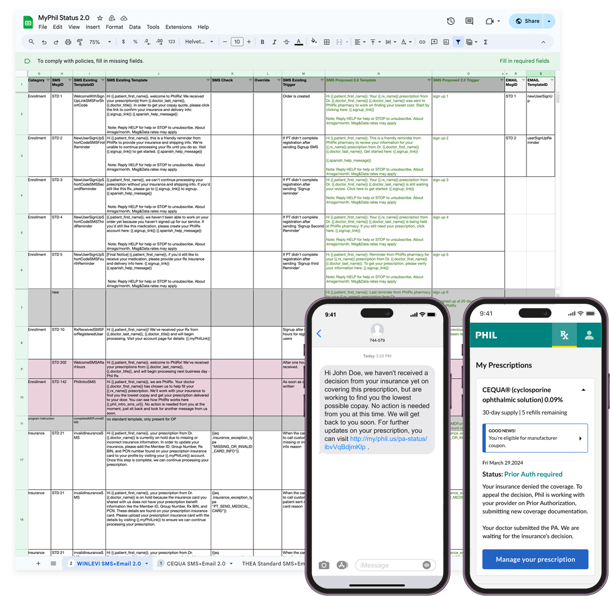

Patient communications
Patients were flooding support channels with questions about out-of-pocket costs, delivery timelines, and cancellations. I audited the messaging strategy, simplified the language architecture across all channels, and introduced real-time order transparency — cutting inbound support tickets by 47%.

Frequently, patients contacted our support channels with questions regarding their out-of-pocket costs, drug delivery timelines, and order cancellations. The sheer volume and nature of these common inquiries indicated a systemic failure in our communications; patients were insufficiently informed about their order status, leading to high friction and frustration. This dynamic not only placed immense operational pressure on our support team but also severely degraded patient trust and overall satisfaction with the Phil experience.
Upon auditing our messaging strategy, I discovered our readability score was excessively complex, rating at a college level. I set the strategic direction to simplify our language architecture across all communication channels. While guiding my team through the UI execution of the updated patient portal, I ensured the new system prioritized real-time transparency.
We introduced daily automated updates via text and email, explicitly outlined the steps to obtain copay assistance through insurance, and prominently integrated our manufacturer coupon offers to eliminate financial ambiguity.
Since launching this comprehensive communication strategy, we have seen transformative results across our key performance indicators. Patient enrollment has held steady at an impressive 85% week-over-week. More critically, the enhanced user experience drove a 47% reduction in inbound support tickets, plummeting from 1,193 to 628 in a single quarter. At the same time, script volume increased 34%, alongside improvements in operational efficiency and patient experience.
“It’s been great. I haven’t had to do anything on my part. Other than reading out a text message or read an email. I haven’t had to make any phone calls. They (Phil) update me on whatever they are doing with my prescription, whether it was for refill or paperwork. I had to do nothing. I didn’t have to call them once.”— R. Clark, a Phil patient